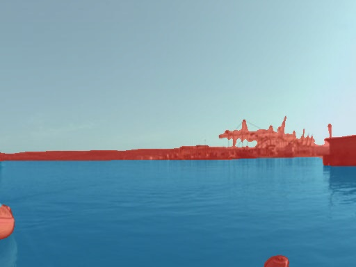
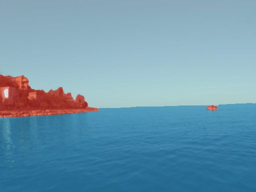
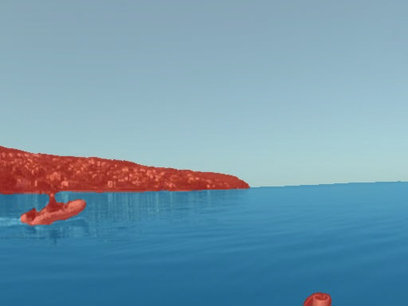
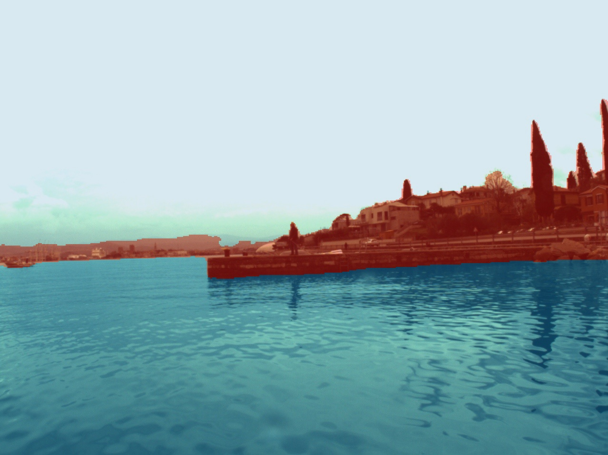
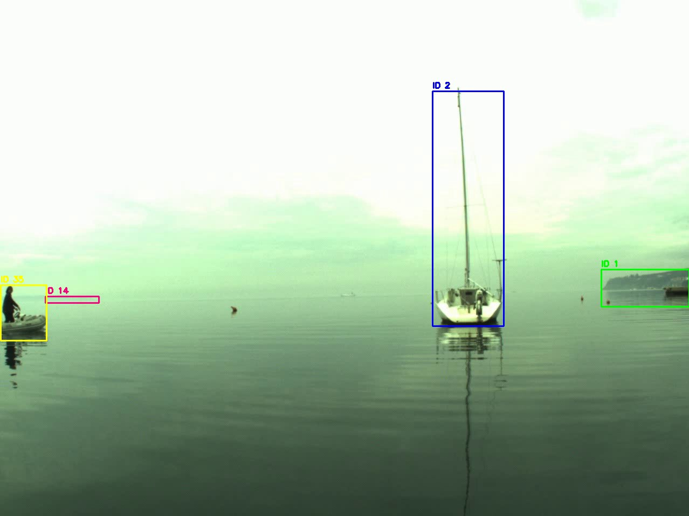

An end-to-end pipeline for detecting and tracking floating obstacles from a USV camera. The design splits the problem in two: a learned segmenter handles the pixel-level classification (training data and model), and a classical Kalman/SORT tracker handles temporal association.
The segmenter was trained on MaSTr1325 (1325 labeled coastal images, 3 classes). The tracker was evaluated on MODD2 stereo sequences at ~70 FPS end-to-end on a single GPU.
The segmenter labels every pixel as obstacle, water, or sky. Because MaSTr1325's obstacle class includes shoreline and piers, a geometric filter isolates floating obstacles. Two modes are used depending on scene: enclosed keeps only blobs with open water directly above them (the defining signature of a fully floating obstacle, e.g. a buoy in open water); adjacent keeps blobs that border water on any side, which also catches vessels partially near a coastline. Both modes drop sky-only regions and wide coast bands via a max-width fraction threshold.
Architecture: U-Net decoder with a ResNet-34 encoder pretrained on ImageNet,
via segmentation_models_pytorch. ImageNet pretraining means the encoder
already extracts useful low-level features before seeing any maritime data,
so ~1125 training images (85% of the dataset) are enough.
ResNet-34 (~21 M parameters) was chosen over larger models to meet the real-time throughput requirement of a USV perception stack. Also, U-Net's skip connections preserve the fine spatial detail needed for sharp water/obstacle boundaries at the pixel level.
Augmentation (train only):
| Framework | PyTorch |
| Input size | 512 × 384 |
| Batch size | 8 |
| Epochs | 40 (~10 min on single GPU) |
| Optimizer | AdamW |
| Learning rate | 3 × 10⁻⁴ |
| Weight decay | 1 × 10⁻⁴ |
| LR schedule | Cosine annealing |
| Loss | Cross-entropy |
| Train / val | 85 % / 15 % (fixed seed) |
mIoU plateaus above 0.99 by epoch 25. The dip at epoch 7 is a cosine LR artifact interacting with aggressive augmentation early in training.
Predictions blended over MaSTr1325 validation images (red = obstacle, blue = water, pale blue = sky).



Raw segmentation includes the coastline. The enclosed filter keeps only blobs that have open water directly above them, isolating floating obstacles.

SORT tracker with per-track Kalman filter. Each track is assigned a stable
color-coded ID. min-hits=3 suppresses single-frame detections;
max-age=20 keeps a track alive through up to 20 missed frames.

MODD2 provides per-frame IMU Euler angles (roll, pitch, yaw in radians, body-to-world convention). The pipeline implements rotation-induced homography compensation: between consecutive frames the IMU delta is converted to a 3 × 3 planar homography H = K · ΔRcam · K−1, and each track's Kalman-predicted box is warped by H before IoU matching. This corrects for perceived obstacle displacement caused by camera rotation, most likely induced by waves and vessel maneuvers.
Camera-to-IMU alignment (Rcam→IMU) was computed from the MODD2 calibration sequences: ground-plane PCA on stereo point clouds gives the camera's vertical axis; combined with flat-ground IMU readings, a two-vector alignment yields the 3 × 3 calibration rotation. The result shows that MODD2's IMU uses an NWU convention (X = bow, Y = port, Z = up).
Conclusion: MODD2's choppy sequences are of only coastline images, and its floating-obstacle sequences have almost no camera motion (≤ 0.004 rad/frame). On the sailboat sequence, IMU compensation even slightly hurt tracking (33 vs 30 IDs, shorter average lifetime) because almost zero homography adds more noise than it removes.